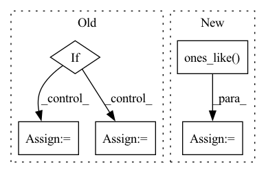

Pattern ID :33286
Before Change
accepted = errnorm < 1
// adjust the step size
if accepted and not t1_achieved:
if errnorm == 0:
factor = self.max_factor
else:
factor = min(self.max_factor, self.step_mult * errnorm ** self.error_exponent)
if prev_rejected:
factor = min(1.0, factor)
h *= factor
elif not accepted:
After Change
if accepted:
factor = torch.minimum(torch.full_like(new_factor, self.max_factor), new_factor)
if prev_rejected:
factor = torch.minimum(torch.ones_like( factor) , factor)
not_t1_achieved = torch.logical_not(t1_achieved)
h[not_t1_achieved] *= factor[not_t1_achieved]
In pattern: SUPERPATTERN
Frequency: 4
Non-data size: 5
Instances Fragment ID: 96020281
Project Name: xitorch/xitorch
Commit Name: c6f0785664d60d1310778d43f14a3464660ea4d9
Time: 2021-12-30
Author: firman.kasim@gmail.com
File Name: xitorch/_impls/integrate/ivp/adaptive_rk.py
M Class Name: RKAdaptiveStepSolver
N Class Name: RKAdaptiveStepSolver
M Method Name: _single_step(3)
N Method Name: _single_step(3)
M Parent Class: object
N Parent Class: object
M File Name: xitorch/_impls/integrate/ivp/adaptive_rk.py
N File Name: xitorch/_impls/integrate/ivp/adaptive_rk.py
M Start Line: 85
M End Line: 122
N Start Line: 125
N End Line: 165
Before Change
y_scale = (input_high - input_low) / (level_high - level_low)
y_zero_point = (level_low * input_high - level_high * input_low) / (input_high - input_low)
if level_low < 0:
level_low = torch.ones([1]).to(torch.int8) * level_low
level_high = torch.ones([1]).to(torch.int8) * level_high
level_low = level_low.to(y_zero_point.device)
level_high = level_high.to(y_zero_point.device)
y_zero_point = min(max(level_low, (y_zero_point.to(torch.int8))), level_high)
else:After Change
y_zero_point = (level_low * input_high - level_high * input_low) / (input_high - input_low)
type_ = torch.int8 if level_low < 0 else torch.uint8
level_low *= torch.ones_like( y_zero_point) .to(type_)
level_high *= torch.ones_like(y_zero_point).to(type_)
level_low = level_low.to(y_zero_point.device)
level_high = level_high.to(y_zero_point.device) Fragment ID: 96020152
Project Name: openvinotoolkit/nncf
Commit Name: 23610df53be6cb3c36a8f5ec6aaf7ab8f4fc757e
Time: 2020-11-06
Author: aleksei.kashapov@intel.com
File Name: nncf/quantization/quantize_functions.py
M Class Name: AnonimousClass
N Class Name: AnonimousClass
M Method Name: get_scale_zp_from_input_low_input_high(4)
N Method Name: get_scale_zp_from_input_low_input_high(4)
M Parent Class:
N Parent Class:
M File Name: nncf/quantization/quantize_functions.py
N File Name: nncf/quantization/quantize_functions.py
M Start Line: 154
M End Line: 169
N Start Line: 153
N End Line: 164
Before Change
tail_weights += torch.where(l_mask, left_weight, zero).sum(-1)
// a size (B,) mask that removes non-firing position
if keep_all_tails:
extend_mask = feat_lengths.new_ones((B,))
else:
extend_mask = tail_weights >= (beta / 2)
// // extend 1 fire and upscale the weights
// one = zero.fill_(1.0)After Change
if extend_mask.any():
// (B, T, C), may have infs so need the mask
upscale = (
torch.ones_like( output)
.scatter(
1,
feat_lengths.view(B, 1, 1).expand(-1, -1, C),
beta / tail_weights.view(B, 1, 1).expand(-1, -1, C),
)
)
output[extend_mask] *= upscale[extend_mask]
feat_lengths += extend_mask.long()
T = feat_lengths.max()
output = output[:, :T, :] Fragment ID: 96020273
Project Name: george0828zhang/torch_cif
Commit Name: 68e2689c475308cd5043cf1d25c49891b23e946a
Time: 2022-02-23
Author: cc.chang0828@gmail.com
File Name: cif.py
M Class Name: AnonimousClass
N Class Name: AnonimousClass
M Method Name: cif_function(7)
N Method Name: cif_function(9)
M Parent Class:
N Parent Class:
M File Name: cif.py
N File Name: cif.py
M Start Line: 29
M End Line: 216
N Start Line: 27
N End Line: 197
Before Change
loss = 0
n = torch.sum(y_true[..., 4] == 1)
if n != 0:
//---------------------------------------------------------------//
// 计算预测结果和真实结果的giou
//----------------------------------------------------------------//
giou = self.box_giou(pred_boxes, y_true[..., :4])
loss_loc = torch.mean((1 - giou)[y_true[..., 4] == 1])
loss_cls = torch.mean(self.BCELoss(pred_cls[y_true[..., 4] == 1], self.smooth_labels(y_true[..., 5:][y_true[..., 4] == 1], self.label_smoothing, self.num_classes)))
loss += loss_loc * self.box_ratio + loss_cls * self.cls_ratio
//-----------------------------------------------------------//
// 计算置信度的loss
//-----------------------------------------------------------//
tobj = torch.where(y_true[..., 4] == 1, giou.detach().clamp(0), torch.zeros_like(y_true[..., 4]))
else:
tobj = torch.zeros_like(y_true[..., 4])
loss_conf = torch.mean(self.BCELoss(conf, tobj))
loss += loss_conf * self.balance[l] * self.obj_ratioAfter Change
loss = loss_loc * self.box_ratio + loss_conf * self.balance[l] * self.obj_ratio + loss_cls * self.cls_ratio
num_pos = torch.sum(y_true[..., 4])
num_pos = torch.max(num_pos, torch.ones_like( num_pos) )
return loss, num_pos
def get_near_points(self, x, y, i, j): Fragment ID: 96020240
Project Name: bubbliiiing/yolov5-pytorch
Commit Name: d49e041b6f4ef50c5d94ce88d33d147f3227bc77
Time: 2022-01-15
Author: 47347516+bubbliiiing@users.noreply.github.com
File Name: nets/yolo_training.py
M Class Name: YOLOLoss
N Class Name: YOLOLoss
M Method Name: forward(4)
N Method Name: forward(4)
M Parent Class: nn.Module
N Parent Class: nn.Module
M File Name: nets/yolo_training.py
N File Name: nets/yolo_training.py
M Start Line: 158
M End Line: 198
N Start Line: 156
N End Line: 200